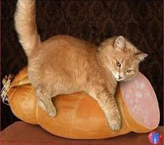
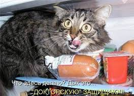

Спред - происходит от английского глагола «tospread», что в переводе означает «намазывать». Это хорошая альтернатива тяжелом маслу, конечно если это качественная продукция. Как отлечить полезные от вредных спредов, и как ориентироваться на уровне производителей этой продукции, узнавал корреспондент «ЗОРЯНОГО».
"Этот продукт является полезным потому что жирно-кислотный состав растительных жиров входящих в спред очень полезный, особенно для пожилых людей, поэтому говорить об этом продукте плохо никто не имеет права", - комментирует Вадим Чагаровский, председатель совета директоров Союза молочных предприятий Украины.

Спрэд безопасный и полезный в следующем составе: молочный и растительный жир с массовой частью общего жира - 50%-85%. При этом, доля молочного жира в его составе не менее чем 25% (от общего жира), с/без добавления пищевых добавок, наполнителей и витаминов.

"Во-первых он дешевле, во-вторых если у человека есть какие-то болезни или непереносимость каких молочных продуктов, то обычное масло можно заменить спрэдом или смесью", - аргументирует пользу спрэдов Ольга Котехова, заместитель председателя ОО "Общественный контроль защиты прав потребителей".
Общественная организация "Общественный контроль защиты прав потребителей" провела проверку качества и безопасности спредов и смесей и обнаружила три завода которые систематически выпускают некачественную, фальсифицированную продукцию. Для проверки спрэд покупали на столичном рынке и популярных продуктовых магазинах столицы.
Tоп фальсификаторов спрэда по результатам исследований 2018-2019: